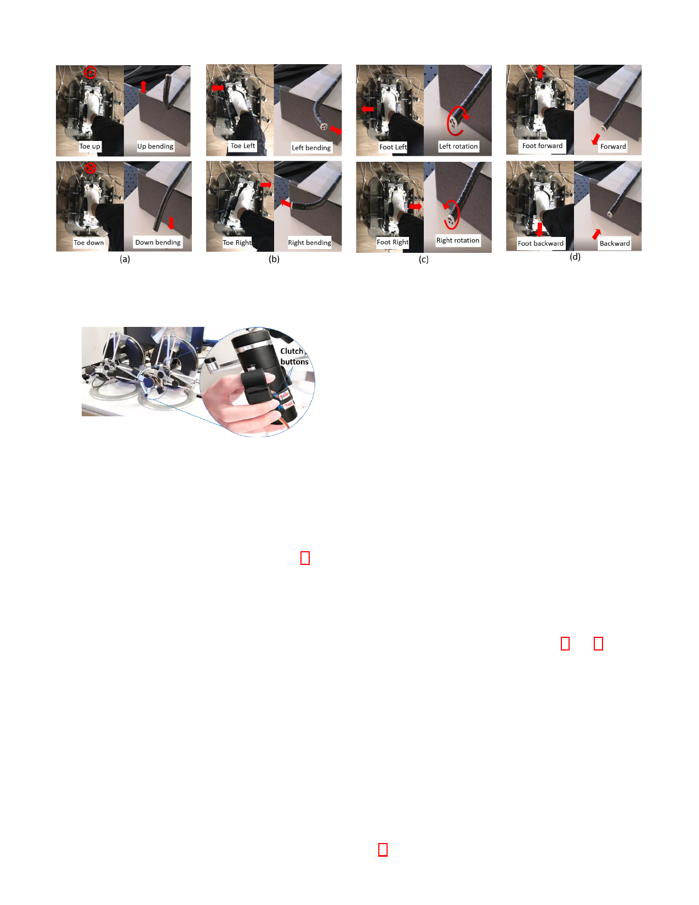

6
Fig. 7. Four-DoF motion control demonstrated with the foot, foot-controlled interface, and the endoscope. (a) Up-down bending DoF. (b) Left-right bending
DoF. (c) Rotation DoF. (d) Translation DoF.
Fig. 8. Hand clutch buttons.
same movement of the endoscope.
3) Hand clutch control: In the hand clutch control mode,
the endoscope and one tool are controlled by the same hand
interface, swapping by clutch buttons. There are two clutch
buttons attached to the handle of the hand interface, which can
be easily pressed by middle and fourth fingers (Fig. 8). Once
the upper button is pressed, the hand interface will control the
endoscope, and when the lower button is pressed, the interface
will swap to control the surgical tool. The hand interface
is set to control the endoscope at the initial state. Before
commencing the task, participants are allowed to choose either
the left or right hand interface to control the third tool.
The conditions of the hand clutch control are set to be the
same with the foot control. The translations in xh, yh, zh, γh
control in/out translation, L/R bending, U/D bending and
rotation DoFs of the endoscope respectively. An outward-
going linear increasing force feedback from -2 N to 2 N are
provided to the hands, setting a automatic home position with
minimal resistance force at middle position. The motion ranges
of hand or foot are mapping to the same velocity range of
the endoscope. All the movements and force feedback are set
within a comfortable ranges.
B. Experiment overview
Six right handed/footed participants with no foot or hand
impairment (of average age of 30.5±2.9 years, 2 females) were
recruited for the experimental study within research staffs from
the Engineering Faculty, Nanyang Technological University.
After providing their informed consent, these participants
attended a training section consisting of a demo on how to use
the foot interface, hand clutch and hand interface followed by
individual practice of 20 minutes. Then they were informed of
the task procedure. The participants were randomly assigned
to start with one of the two control mode. Ten minutes were
given for a practice section to conduct trial operation. After
completing four sets of operation with one control mode in the
task section, the participants were asked to practice and run
another four sets of operation using another control mode. To
prevent fatigue, there were 1-minute breaks between each set
and 5-minute break interval between the two control modes.
The subjective assessment section was conducted after the
operation, i.e.,each participant was asked to fill a questionnaire
in order to assess the mental effort, operation efficiency,
easiness and comfort for the tests with a Likert scale from 1
to 5. They were also asked to choose their personal preference
among the two control modes and specify the reasons.
C. Experimental operation
The experimental setup is shown in Fig. 9. Fig. 9a depicts
the master console for the operator including two hand inter-
faces, the foot interface and a foot switch. The foot switch is
used to activate monopolar option of Erbe electrosurgical unit.
It is commonly used in electrosurgery to cut the target tissue
and/or coagulate bleeding.
The standard endoscopic surgical procedures, e.g., endo-
scopic submucosal dissection (ESD), are difficult to perform
without surgical training. A simple task was employed here
instead: burning the tissue at four different targets (e.g.,
locations). The cutting is defined as touching the tissue using
monopolar cauterizing hook. In the test, the porcine stomach
was fixed on a 150×150 mm2 inclined surface with a 45◦
slope. There were four targets located spatially (in the zone
of 100×50×50 mm3) on the tissue marked by blue color dye
(Fig. 9c), inclusive of two exposed and two covered targets.